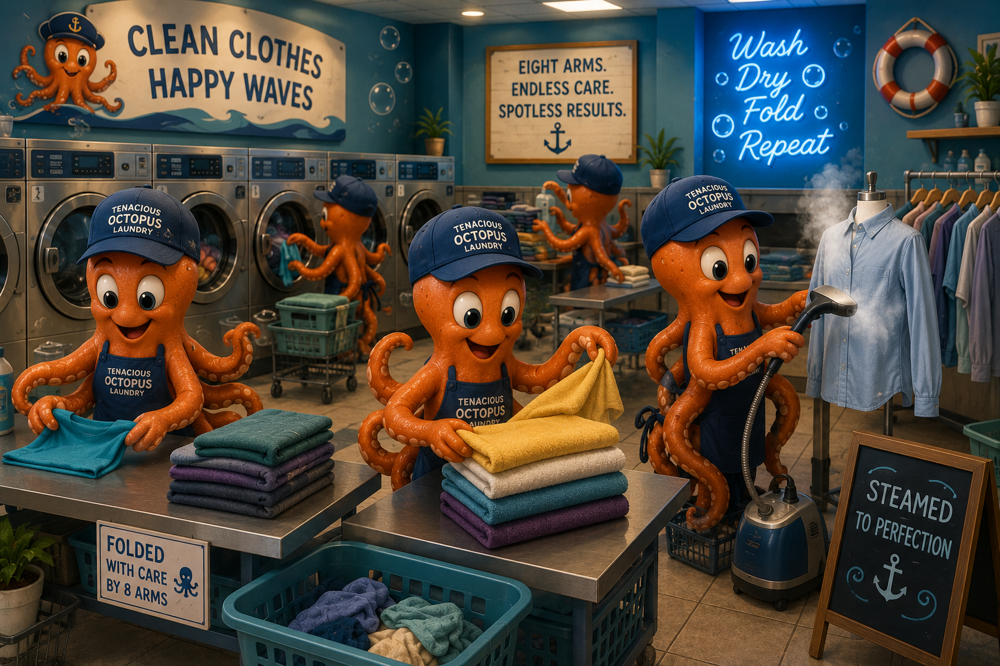

About Our Octopus Crew
Tenacious Octopus Laundry was created around one simple idea: laundry is easier when you have eight arms helping. Our imaginary business is run by a team of cheerful octopuses who take pride in keeping clothes clean, soft, and fresh. Inspired by the teamwork and efficiency of these remarkable sea creatures, we imagined a laundromat where every task is handled with care, attention to detail, and a smile. From the moment customers walk through our doors, they are welcomed into a fun, nautical-themed environment where laundry becomes less of a chore and more of an enjoyable experience.
Each octopus has a special job. Some carefully sort clothes by color and fabric, some expertly operate the washers and dryers, others neatly fold towels and garments, and a dedicated crew packages completed orders for pickup or delivery. Working together, our eight-armed staff ensures every load is treated with the highest level of care and quality. Whether you're stopping in for a quick self-service wash or trusting our full-service wash-and-fold team, Tenacious Octopus Laundry is committed to providing dependable service, spotless results, and a little bit of ocean-inspired fun with every visit.


Our Promise
We promise to treat every shirt, sock, towel, and blanket like it matters. Our goal is to make every customer leave with fresh laundry and a smile.